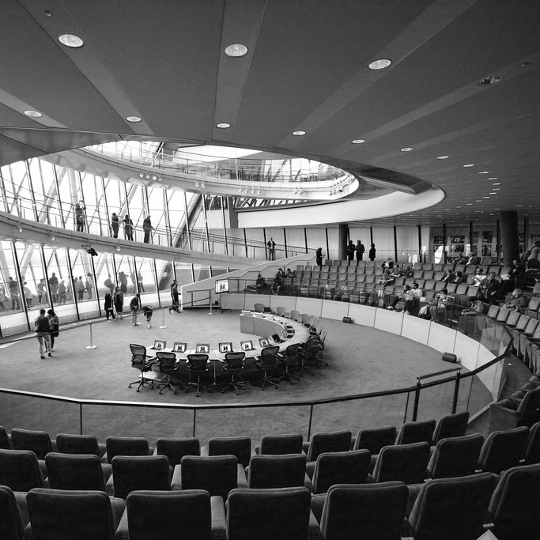
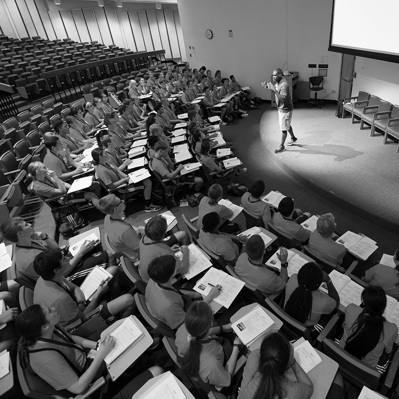
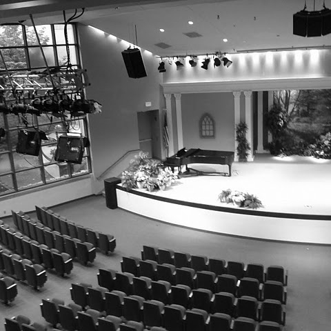
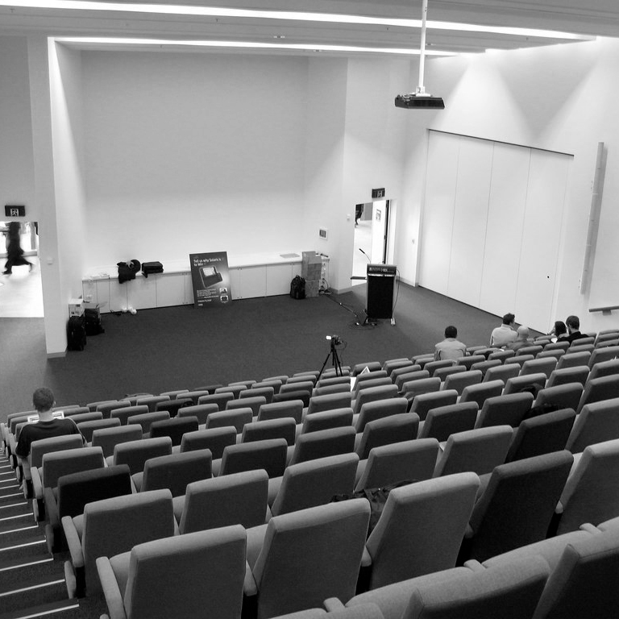
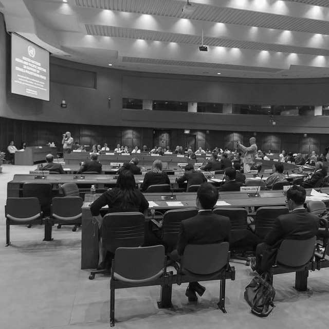
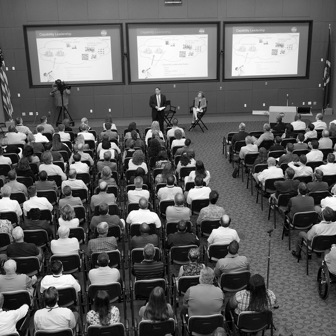
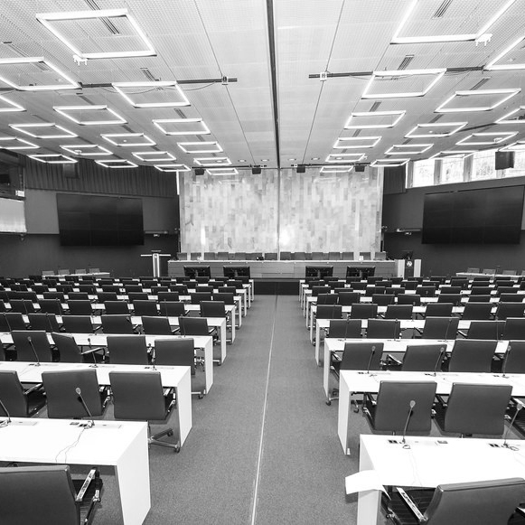
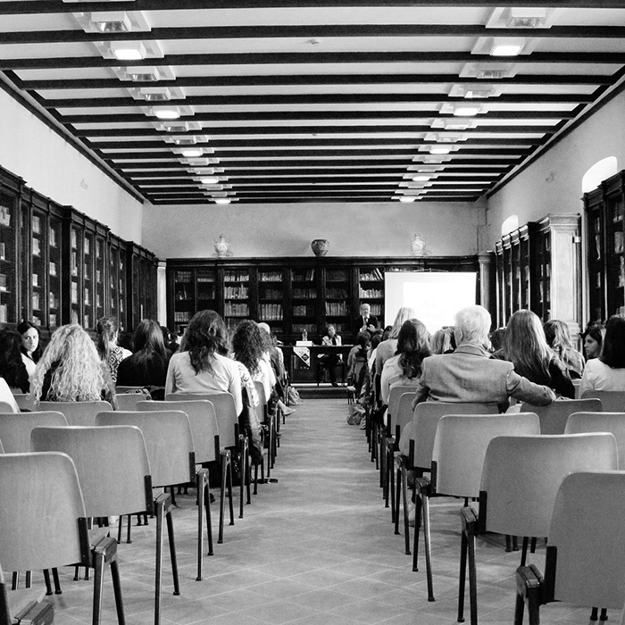
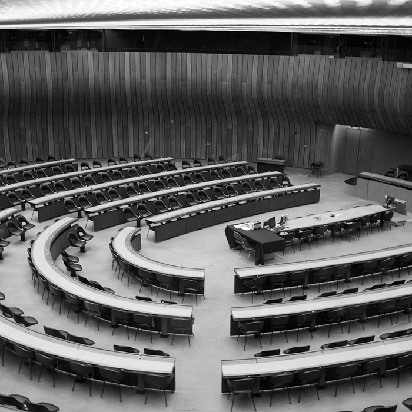

EVENTS

AI with Zeynep Tufekci
May 21st, 2pm-5pm
Join Zeynep Tufekci as she discusses her ground breaking work in Artificial Intelligence. She will discuss how she emerged into AI, what inspired her, and some of her work. The last hour will consist of an audience Q&A.

Kids that Kode
May 22nd, 9am-12pm
Learn from some of the youngest designers in code. A panel of six kids that code will be presenting on their previous projects and how they got into coding. We encourage you to bring your youngsters to the event!

We Slack with Kristy Tillman
May 22nd, 1pm-4pm
The Head of Global Experience Design for Slack, Kristy Tillman, will be joining us to explain how an apprentice at Reebok has become one of the most powerful women in technology services. A Q&A will take place during the last hour of the talk.

Teaching Tech with Jen Simmons
May 23nd, 12pm-3pm
Jen Simmons will be continuing her ongoing promotion of CSS Grid at this event where she will demonstrate the ongoing possibilities of using a grid layout. Live, Simmons will create a website for one lucky audience members ideas and show the benfits of grid.

Gaming for Girls with Zoe Quinn
May 23nd, 4pm-7pm
Zoe Quinn, a video game designer will be hosting a group of girls coming from a local school and teaching them the basics of coding an online game. Other audience members are welcome, but the main focus will be on educating the young girls.

Designing Dreams
May 24nd, 4pm-7pm
Our panelists will get together and use audience generated ideas and show how a concept goes from just an idea to an actual reality. If you would like to submit and idea, please direct message us on instagram @women_on_web.

Typing Together with Nadine Chahine
May 25nd, 3pm-6pm
Come learn about Nadine Chahine's progressive type design that could change the way foreigners communicate with others. Nadine's groundbreaking type design will be on display at the location of the event.

Free for All with Cindy Cohn
May 26nd, 3pm-6pm
Join Cindy Cohn as she educates us about the confusing aspects of internet law. Cindy Cohn has been recognized as one of the best internet lawyers due to her groundbreaking work in the internet law field.
